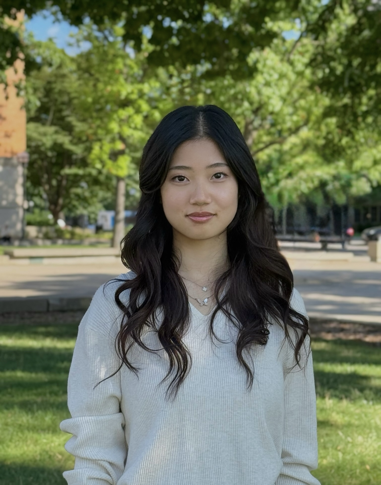
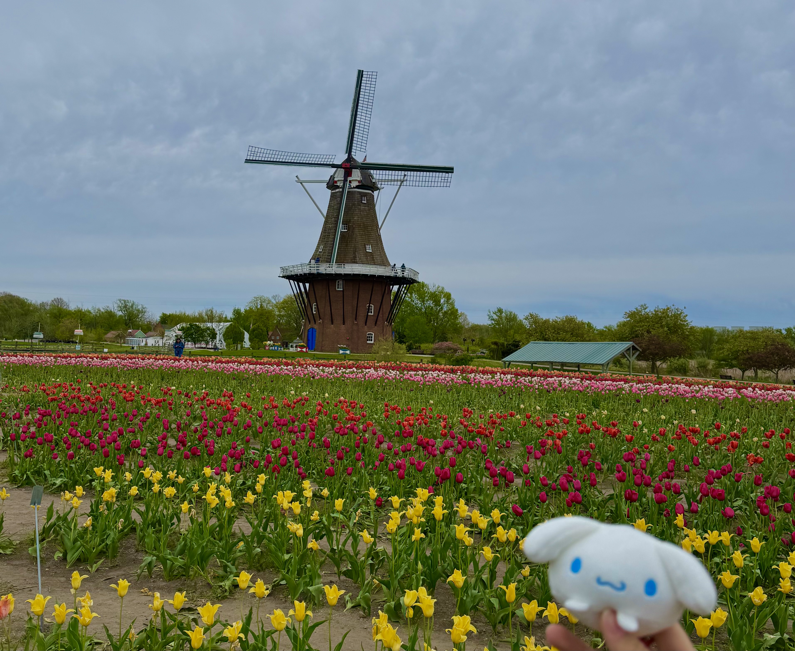

About Me


Hi, I'm Angela! I'm a student at the University of Michigan studying UX Design with a minor in Human-Centered AI. I'm motivated in being able to use my diverse range of creativity to make functional designs, focusing on building systems that improve positive experiences and interactions.
Before I started studying UX Design and AI, I dove into the field of psychology and cognitive science because understanding society and people's behaviors to make decisions got me curious for new concepts and perspectives. Trailing that curiosity led me to combine it with my own ideas, building one concept onto the next and turning my fascinations about people and designs that meet them where they are, shaped by how they actually behave rather than how I assume they will.
While studying UX Design, I am also the Secretary for the Muay Thai at the University of Michigan club where I organize every practice we hold to the collaborative events we host. I manage logistics, such as safety waivers and protocols, while trying to balance a learning yet easy-going environment. I am also a part of the video and styling team in MA:E Magazine, where we have photoshoots to represent our meaning of fashion woven into the important message of keeping APIDA culture alive and high-spirited.